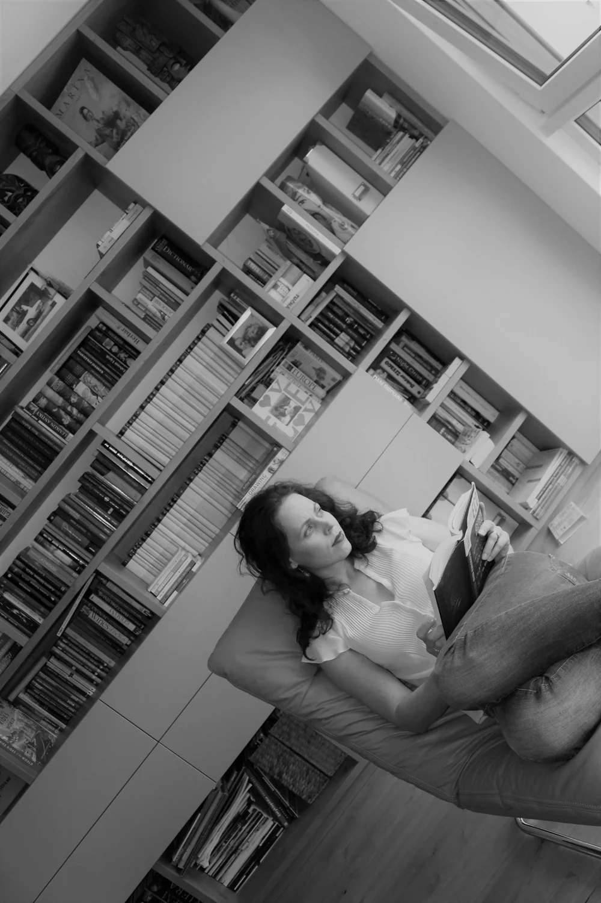
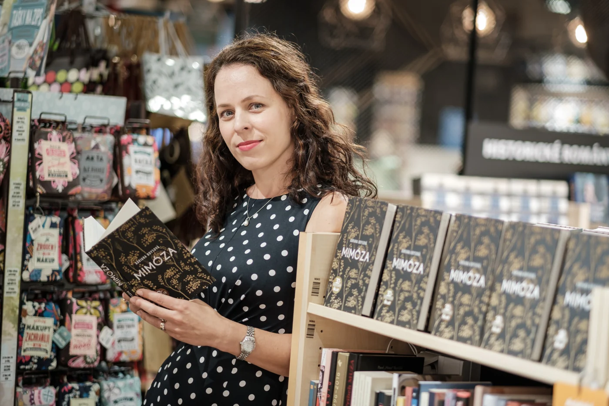
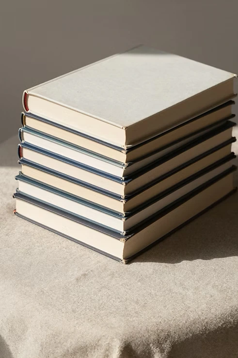

O autorke
Prostredníctvom svojich kníh, vrátane obľúbených diel „Zamatový jež“ a „Zachránené Vianoce“, Adriana vytvára príbehy, ktoré rezonujú s ľudskou dušou. Vo svojej próze sa s nevšedným poetizmom vyrovnáva s prozaickosťou života a neľahkými chvíľami, v ktorých sa jej literárne postavy ocitnú či už svojím vlastným pričinením alebo vplyvom okolostí. Jej príbehy sú dôkazom sily rozprávania, kde každá stránka vytvára mozaiku ľudskej skúsenosti.
O písaní
Písanie bolo a je pre mňa prirodzené asi ako dýchanie, preto som k nemu pristupovala ako k niečomu, čo je mojou súčasťou a neriešila som, či a ako ho zdieľať so svetom. Až raz, s odstupom času si myslím, že to bolo blížiacou sa štyridsiatkou a akýmsi reflektovaním toho, čo robím a čo ma baví, niečo vo mne mi hovorilo, nech to skúsim, že ak to moje písanie stojí za to, tak z toho do tých mojich okrúhlych narodenín vznikne kniha a ak nie, život ide ďalej… Dala som dokopy pár poviedok a poslala som rukopis do vydavateľstva. Každý z príbehov bol iný, mal rôznych rozprávačov, odohrával sa v inom prostredí, spájala ich niť lásky – tú som však nechcela zabaliť do ružovej vaty, ale ukázať jej rôznorodosť, komplikovanosť, mnohovrstevnosť.

Je pre mňa dôležité, aby moje knihy prenášali na čitateľov emócie, priam celú škálu pocitov. Verím, že aj vďaka čítaniu beletrie môžeme byť jeden k druhému viac empatickí. Nemusíme zažiť všetko, ale ak sa vieme vcítiť do osudu niekoho iného, zanecháva to v nás stopu a s novým pohľadom na svet dokážeme byť vnímavejší a pripravenejší na neustále sa meniaci svet.
Knihy
si môžete kúpiť vo všetkých tradičných aj online kníhkupectvách a na stránkach vydavateľstva:
- Zachránené Vianoce - vydavateľstvo Albatrosmedia
- Zamatový jež - vydavateľsvo Lindeni
- Šťastné náhody a Mimóza - vydavateľstvo Ikar

